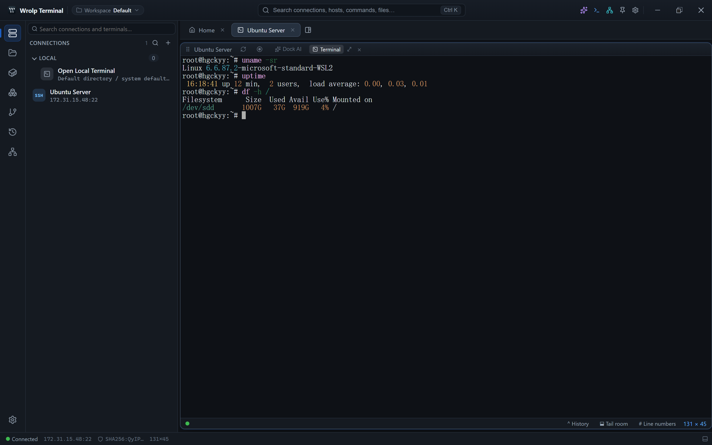

Tabs
Connections open as tabs in a multi-tab terminal area. Each tab carries its own status indicator (see chapter 2) and can be reconnected without spawning a second session.

Split trees and floating panes
- The terminal area is a split-tree layout: panes can be split horizontally or vertically, and leaf nodes hold a terminal, Docker logs or the editor.
- Any pane can be popped out into its own floating window.
- Open files and logs are isolated per session, so one connection's editor or log view does not leak into another's.
- A local shell and remote shells can sit side by side because both use the same
RemoteFsabstraction.
Keybindings
All shortcuts live in a single table in src/lib/keybindings.ts. Settings allow rebinding an individual
entry, resetting one entry, or resetting everything. Combos match exactly — Ctrl+B does not fire on
Ctrl+Alt+B — and Ctrl maps to Cmd on macOS.
| Action | Default |
|---|---|
| Command palette | Ctrl+K |
| Show or hide the sidebar | Ctrl+B |
| Move the sidebar to the other side | Ctrl+Alt+B |
| Show or hide the bottom panel | Ctrl+J |
| Move the panel between bottom and right | Ctrl+Alt+J |
| Show or hide the inspector | Ctrl+Alt+I |
| Split the terminal | Ctrl+\ |
| Command snippets list | Ctrl+Shift+P |
| Command history | Ctrl+Shift+H |
| Dual-pane file view | Ctrl+Shift+F |
| Command completion list | Alt+/ |
| Scroll back / forward one page | Shift+PgUp / Shift+PgDn |
| Jump to the oldest output / back to the prompt | Shift+Home / Shift+End |
| Save file | Ctrl+S |
| Close a pop-up | Esc |
Reserved keys cannot be bound: Tab, Enter, Space, Backspace, Delete, plus Ctrl+C, Ctrl+V, Ctrl+X, Ctrl+Z, Ctrl+D, Ctrl+W, Alt+Tab, Ctrl+Shift+Esc.
Window and application behaviour
- Custom title bar.
- Window geometry and opacity are persisted between runs.
- Single-instance protection: launching the application again does not create a second instance.
- Chinese and English interface strings; the language follows the system language by default.
Updating
The application checks for updates through latest.json on GitHub Releases, verifies installers with
the pubkey in tauri.conf.json, and installs them in passive mode.